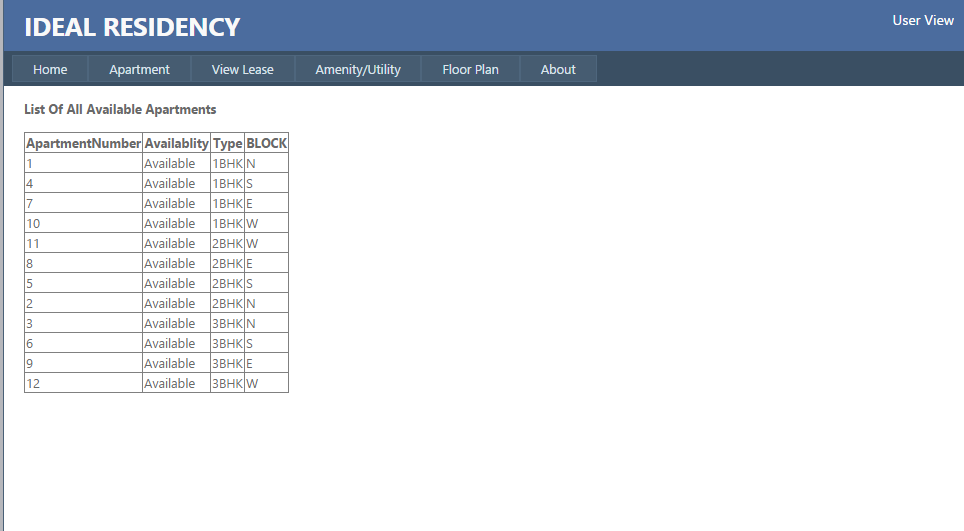
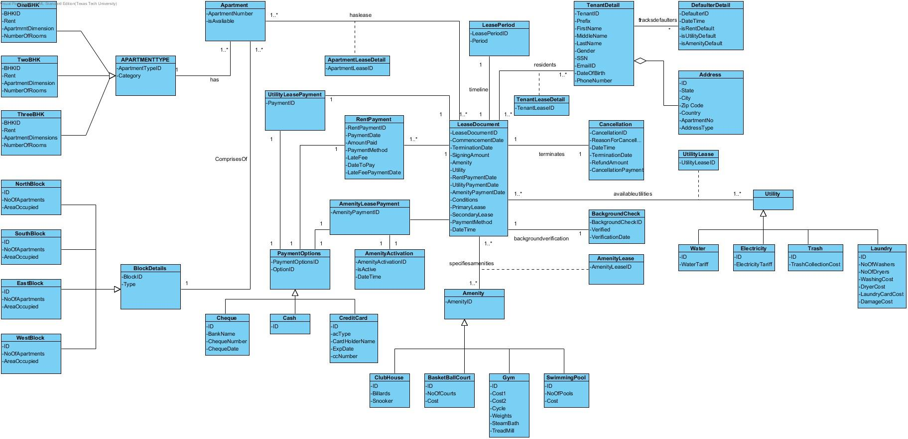

|
Hello, I am Prathima Gopal Krishna, Master’s student at Texas Tech University. I am majoring in Management Information Systems (MIS) and will be graduating this spring. I work as Graduate Research Assistant for the former Dean of Rawls College of Business Administration.
I did my schooling and Bachelor’s from Bangalore, also known as the ‘Garden City’ & ‘Silicon Valley’ of India. Unlike many others my interest in Information Technology (IT) picked up only during my Undergrad days because I was interested in and was keen on becoming a Chartered Accountant (CA). Anyhow, I have enjoyed my 7 years of working as an application developer on Java/J2EE technology, and have had the opportunity to grow from a Front End developer, to Back End developer and now to a Full Stack Java Developer. I have worked across all the stages of Software Development Life Cycle, this apart I can also function as a platform independent Build and Release Engineer. Besides my work, right from my schooling days I have enjoyed being part of cultural activities, outdoor activities and travelling, which I love the most. During my tenure as a sub-committee member of the India Student Association (ISA) at Texas Tech University I organized the ‘Fashion Show’ for ‘TARANG’, the annual cultural event for the Indian community and students at Lubbock. Please look into the ‘Project’ section which gives more about my technical experience. |
Academic Projects
Course Name: Database Management
Project Title: Ideal Residency
Tehnology & Tools: SQL Server Management Studio, Visual Paradigm, Visual Studio (2012), SQL, PL/SQL, ASP.NET.
Description: The goal of this project was to design and develop a web based application using concepts from the course.
We decided to create a web application for the housing industry, precisely the apartment sector.
The application designed and developed offered functionalities such as select and book apartments, rent and utility payments.
Outcome:
The user requirements were documented in the Software requirement specification (SRS) document.
Business rules were deduced from the user requirements.
Prepared list of all possible user queries.
List the System requirements with emphasis on response time and system security.
Creation of the logical and physical data model.
Creation of the database and the related tables using the physical data model.
Design of the User interface using Dreamweaver and creation of the application using ASP.NET component of Visual studio.
Sample Screen & Data model (Logical and Physical):  
Course Name: Systems Analysis and Design
Project Title: Clinical Research
Tehnology & Tools: Visual Paradigm, SQL Server Management Studio, Visual Studio
Description: Goal of this project was to use the concepts from System analysis and design and to design a new system for high-level functional requirements of the EHR Clinical Research module as listed on the HL7 website.
Outcome:
Derived the functional and non-functional requirements from the high level functional requirements.
Created the domain and design class diagram, sample:
Created the Use Case diagrams, sample:
Created the Logical database design with the description of the tables, attributes and data type.
Created the Sequence Diagrams, sample:
Course Name: Data Management and Business Intelligence
Project Title: Data Warehousing-Using Hadoop and SQL Server 2008
Tehnology & Tools: Visual Studio, SSIS, SSAS, SAS Enterprise Guide, Tableau, Hortonworks Sandbox distribution of Hadoop, Hive, Sqoop
Description:
Creation and analysis of a datamart using 2 different data sets on SQL Server 2008 and Hadoop.
Analysis of the datamart viz. reports created using Tableau and SAS Enterprise Guide.
Outcome:
Data Cleansing and loading is done viz. ETL using SSIS component of Visual Studio, sample: 
Data mart created using the SSIS component of Visual Studio and using Hortonworks Sandbox file browser.
Data inserted from SQL server to Hadoop using Sqoop.
Drill down the cube/datamart results by various parameters, sample: Tableau SAS EG.
Professional Projects
Client: National Science Foundation(NSF)
Project Title: Network Critical Interdependent Infrastructure Systems
Tehnology & Tools: Java, Power World, Any Logic Simulation
Description: The objective is to develop a research framework for assessing the resilience and economic impact of disasters on networked critical interdependent infrastructures.
Outcome:
Evaluated the resilience and impact of disasters on network critical interdependent system by designing a framework and simulating an agent based model of the framework.
Demonstrated that a multi-drop framework is secure and resilient to attacks.
Client: Telstra
Project Title: National Broadband Network (NBN)
Tehnology & Tools: Java, JSP, HTML, CSS, Hibernate, SOAP UI, REST, WSDL, XML, HP Quality Center, Winscp, Putty, Websphere, SVN, Eclipse, Oracle DB.
Description: NBN is the enhanced e-business application of LOLO, a legacy application that supports automatic ordering processes for Telstra Wholesale Service Providers.
Outcome:
Implemented product ordering and tracking system of the Telstra NBN application with minimum defects.
Awarded the HP-E-Award for quick troubleshooting and resolution of defects during System Integration Testing (SIT) at onsite and offshore.
Reduced the defect resolution time and quality improvement by minimizing the defects during User Acceptance Testing (UAT) and production release by leading and assisting the team.
Client: Symantec
Project Title: Symantec Build & Release Engineering Team
Tehnology & Tools: Unix Shell Scripting, Remedy, Perforce, Winscp, Putty.
Description: To perform build and release activities for applications developed on various platforms adhering to the release management process.
Outcome:
Migrated applications across platforms to UAT and production environment.
Reduced the build and deployment time by automating build scripts.
Monitored and performed error free database baseline activity.
Client: HONDA
Project Title: Apollo Seihen
Tehnology & Tools: Java, Hibernate, JSP, HTML, CSS, DB2, Junit, Star UML, Spring, Websphere.
Description:
To deliver a solution to enable an accurate calculation of a DAD (Dealer arrival date) and keep to it.
To provide monitoring and management of progress of a vehicle along the supply chain.
To enable business to meet the fixed DAD which will provide confidence to the Dealer networks on the delivery promise received from Honda.
Outcome:
In the automated system to deduce HONDA dealer arrival date, implemented the ordering process with minimum defects.
Implemented the data model of the application.
Led and mentored a small team of UI developers in timely delivery of the deliverables.
Accurately captured business rules by reverse engineering the legacy system developed in COBOL.
Ensured error free version controlling while assisting as configuration controller.
Client: Quatar Customs
Project Title: Quatar Customs Single Window Clearance System(QCCSW)
Tehnology & Tools: Java, Spring, Hibernate, JSP, CSS, HTML, HP Quality Center, Oracle, Eclipse, Weblogic
Description: QCCSW system facilitates Qatar customs and traders for effective customs clearance by increasing the efficiency through time and cost savings for traders in their dealings with various government authorities for obtaining the relevant clearance and permit(s) for moving cargoes across national or economic borders.
Outcome: Implemented and tested the guarantee and refund payment system of the system with minimum defects.
Client: Human Resource Department, Crimson Logic, Bangalore
Project Title: Online Performance Monitoring System
Tehnology & Tools: Java, JSP, Struts, JDeveloper, Tomcat, Oracle
Description:
Online Performance Monitoring System is an automated rating tool that enables the management to review, rate the performance of all employees, generate the bell curve and desired reports.
The aim is to eliminate the paper based performance review process.
Outcome:
Interacting with the HR department accurately captured user requirements.
Implemented and tested the system with minimum defects.
Exclusively maintained the system.
|
Besides work and studies I enjoy travelling, music, karaoke, dance and reading.
|
||

|

|